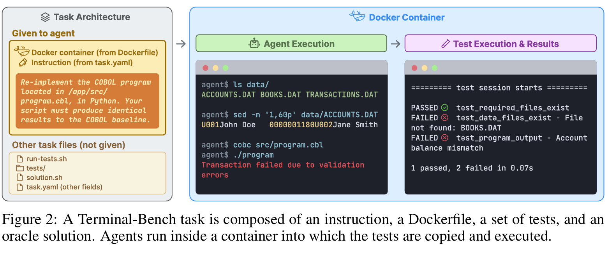
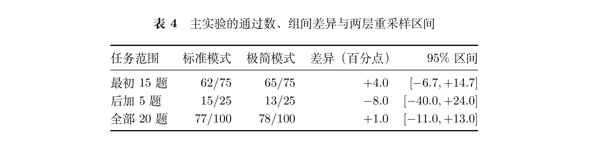
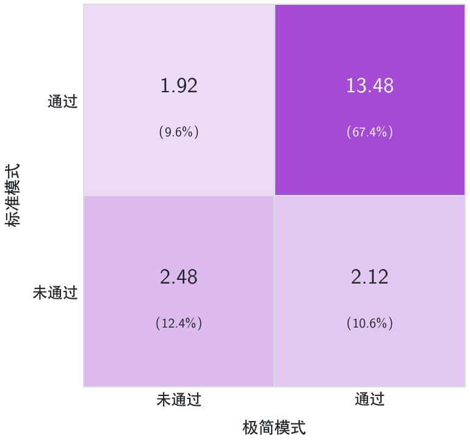
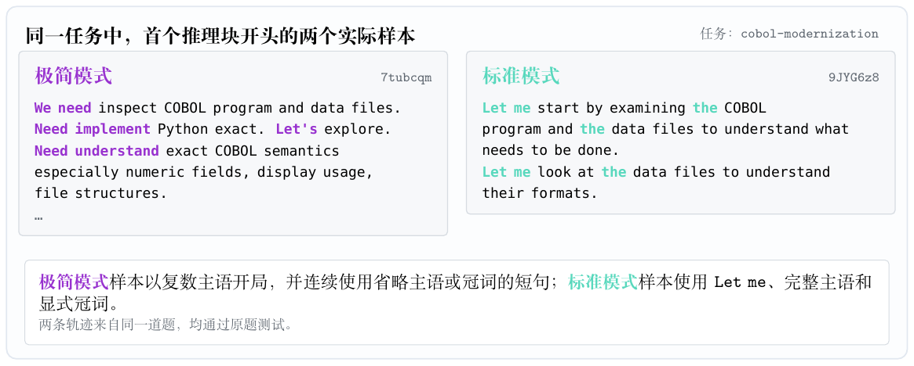
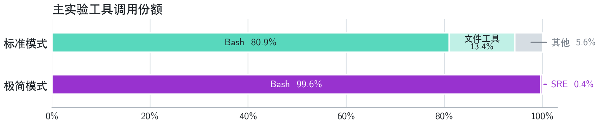

我测了 25 亿 token
本章结论：在我测的任务上，跑分差不多
极简/标准，跑分难分高下
Terminal Bench 2.1 一共 89 题，我手动挑了其中的 20 题测试了 V4 Pro + dsh 极简模式 / 标准模式。
Terminal Bench 2.1 的题目形态为 agent 在 docker 内做题，评分器打分。最终分数核算方法为外部的评估脚本在交付结果上跑一遍，检查点都通过，就得 1 分，否则 0 分。每题跑 5 次。

图源：The Terminal-Bench Team，《Terminal-Bench: Benchmarking Agents on Hard, Realistic Tasks in Command Line Interfaces》；用于说明评测任务形态，不适用本站 CC BY 4.0。
20 道题，每个模式下 100 个轨迹，一共 200 个轨迹。Terminal Bench 2.1 的算分方式是计算平均：得分 / 轨迹数，结果为下表。

至于什么是最初 15 题，后补 5 题，细节可以去看 PDF 长文。
总之结论：就这 20 题上，无法稳定证明，极简模式和标准模式有多大的差距。
没有测完整个 Terminal Bench 2.1，有两个原因：
成本。 跑完整个实验，涨价前预估 614 元，涨价后梁文谷 1730 元，梁文峰 3461 元，这 200 个轨迹还是在涨价前一个小时卡点跑完的，没饭钱了。
意图？ 可以看看下表。看似 77 和 78 很接近，但是在很多题目上，两个模式的得分已经拉开了差距。计算方法参考 PDF 长文。

凭借统计学我们可以知道，出现了这种情况，我们是万不能直接说“78 一定比 77 好的”。也可以看表 4 里的置信区间。
如果我做完了完整的实验：
复现出官方报告的高分？有可能。但是一旦优势出现在少数题目上，算个置信区间，真的能说一定好吗？也可以退一步说模型在这些领域里会变好，问题只会越来越复杂。现在模型好坏都是靠社区大量样本来相对评估的，一个 Benchmark 不够， 我不可能无限的测试下去。
复现不出极简模式高分？更有可能。DeepSeek 官方甚至公开了采样参数，
使用 max 档位，topp=0.95，temperature=1.0，但我完全不可能自部署，说不定模型的 Agent 能力与具体的采样参数、显卡类型相关？ 训推不一致？ 这都是有可能的。
比起盯着这个难题跑一次 1 元（涨价前）、200 条轨迹只覆盖 20 道任务，无法得到可靠结论的 Benchmark 子集得分，我目前已经获得了：
- > 10000 个推理块，可以尽情分析社区吹捧的语言风格。
- > 12000 个工具调用记录，光是极简模式下就有超过 6000 个，轨迹里几乎都是
bash而没有str_replace_editor，很容易看出来。
后续的实验都围绕着这 200 个样本展开。
语言风格：极简模式 We 开局更多
这个和社区观察一致，很明显的。
| 极简模式 | 标准模式 | |
|---|---|---|
| We 开头 | 100% | 4% |
| 非 We 开头 | 0% | 96% |

图里把其他语言特征也写了，不过目前不重要。
我没有参加过 DeepSeek V4 Pro 的七月灰测，确实不知道灰测里 We 开头比例是多少。
不过别把模型语癖当成模型能力的标记啊，这算什么“青春初恋文学”吗？
工具调用：极简模式编辑器萎缩
这个就很夸张了。
更夸张的是，至少在我检索到的公开讨论和插件报告中，没有看到极简模式的轨迹级工具分布。
这只是个简单看看 Agent 运行轨迹就能得到的结论：

原谅我真没绷住。
当然，bash 本身能力强，自然调用多，标准模式 bash 也不少，确实。
- 但是 99.6% 是否有点荒谬了？
第三节 我们会详细分析这个问题，包括把 bash 在干什么也拆开给你看。拆完后至少 319 次字符串替换还是在 bash 里，模型会自己写 python str.replace(...) 来手搓文件编辑器。只考虑这部分文件编辑操作，str_replace_editor 也只占了 4.49%。
不管怎么说，不可能 100 次测试，模型只浏览 / 编辑 25 次吧？
截图来源：DeepSeek Harness 的 minimal 配置说明；用于评论“双工具 Agent”的公开定位，不适用本站 CC BY 4.0。
你们最好真测试过，这是个 “双工具” 编码 Agent
别的模型确实会一起用“双工具”，V4 Pro 在本文 Linux 极简样本中几乎只用bash
为什么同一个社区一边把 We need 当作 RL 对齐标记，一边几乎不检查所谓 RL Agent 实际怎样使用工具？
跑分可以验证产品在 Benchmark 上好不好用，不能自动解释为什么好用。
一个词，被偷换成能力，万万不可
所以也附上一个提示：区区 200 条样本，也根本得不出：
“还原极简模式的 We need 语言风格，能提高模型跑分”
=> 别这么做……
“V4 Pro 只会用
bash而不会用str_replace_editor，是模型被训练傻了”=> 虽然工具确实直接操作环境，比起语言影响分数“没那么玄学”，但实际还是要构造一组实验的：
- 训练一个只会
bash而不会str_replace_editor的模型，测各种 Benchmarks - 训练一个能均匀使用工具的模型，测各种 Benchmarks
这实验做不了，也没有多大的意义
- 训练一个只会